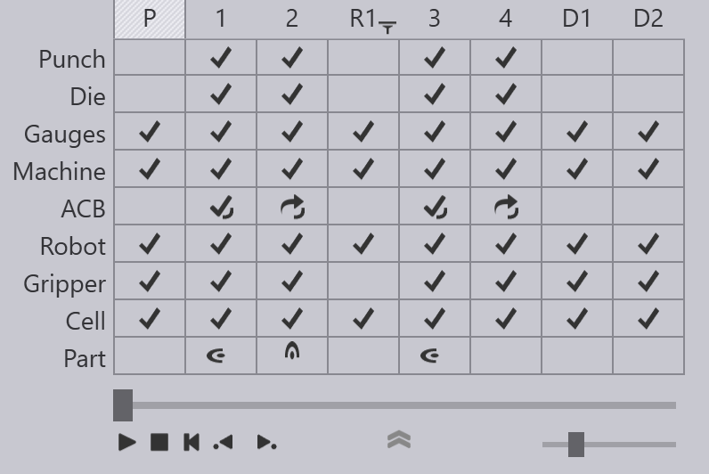

Bend gezinti öğesi

Ekranın üst kısmındaki Bend gezinti öğesi, komple çevrimin bir genel görünümünü sunar. Gezinti öğesinde kullanılan simgelerin ve terminolojinin çoğu, manuel bükme için kullanılan gezinti öğesinde kullanılanlara benzerdir. Bununla birlikte, robotik bükme işleminin ilave karmaşık unsurları, içeriğe burada açıklayacağımız çeşitli satır ve sütunlar ekler.
Alma, Kavrama ve Bırakma sütunları
Yukarıdaki resimde, dört büküm içeren bir BendMaster parçası için görüntülenen büküm gezinti öğesi gösterilmektedir. Bükümler 1 ila 4 arasında etiketlenmiş sütunlar üzerinde görülebilir ve belirli ek sütunlar da görüntülenir.
-
P ile işaretli sütun, parça alma faaliyetini gösterir. Bükme işlemi başlamadan önce, BendMaster bir paletten veya parça dağıtıcıdan bir boş (yassı ham sac levha) almalıdır. Bu sütun, bu faaliyeti temsil eder. Üzerine tıklayıp kaydırıcıyı kullanarak parça alma faaliyetinin simülasyonunu görebilirsiniz. Bu parça alma sırasında bir çarpışma veya başka bir sorun söz konusuysa, bu sütunda bulunan ilgili satırlar sarı (uyarılar için) veya kırmızı (hatalar için) renkte yanar.
-
R1, R2 gibi etiketlerle işaretlenmiş olan sütunlar, kavrama faaliyetlerini gösterir. Parça alma sırasında, kavrayıcı parçayı belirli bir düzlemde, belirli bir yönde kavrayarak alır. Bazı durumlarda, parçadaki tüm bükümler aynı yönle işlenemez ve kavrayıcının devam etmek için parçayı yeniden kavraması gerekebilir. Yukarıdaki örnekte kavrayıcı, bir kavrama faaliyeti aracılığıyla, 2 ve 3 numaralı bükümler arasında farklı bir yöne sahip olan parçayı almalıdır. R1 sütunu, bu kavrama faaliyetini simüle etmek veya bu faaliyeti çarpışma veya diğer hatalar bakımından izlemek amacıyla kullanılabilir.
-
D1, D2 gibi etiketlerle işaretlenmiş olan sütunlar, son palet, konveyör veya sepetteki parça bırakma faaliyetlerini temsil eder. Her bir bırakma sütunu, bırakma istifindeki parçanın belirli bir yönünü temsil eder ve kullanılan bırakma desenine bağlı olarak, bu türde yönler birkaç adet olabilir.
Robot, Kavrayıcı ve Hücre satırları
Robot, Kavrayıcı ve diğer Hücre komponentleri için yeni satırlar eklenmiştir. Bu satırlar, olası çarpışmaları veya diğer hataları bildirmek amacıyla kullanılır. Örneğin, robot ile makine tablası arasında bir çarpışma, her iki satırda da kırmızı bir çarpışma simgesi aracılığıyla gösterilir. Simülasyon sırasında, çarpışan komponentler de kırmızı renkte gösterilir:
Kavrayıcı satırı, kavrayıcı ile ilgili çarpışmaları veya olası diğer sorunları gösterir. Örneğin, aşağıdaki görüntü emme sistemi kavrayıcısıyla ilgili bir uyarı gösterir:

Hücre satırı, aşağıdakiler de dahil olarak diğer hücre komponentlerinin durumunu temsil eder:
-
Alma ve bırakma paletleri
-
Parça dağıtıcı
-
Kavrama istasyonları
-
Kavrayıcı istasyonları
-
Konveyörler
Hücre satırında, kavrama istasyonuyla çarpışma olduğunu gösteren bir hata simgesi bulunmaktadır:

Kısayol Tuşları
Bu kısayol tuşları, TecZone Bend içeriğindeki farklı modlar ve paneller arasında gezinmeyi hızlandırır.
Gezinti kısayolları |
|
PgUp PgDn |
Simülasyonda önceki veya sonraki aşamaya geçiş |
|
Aynı aşama içerisinde bir önceki veya sonraki faza geçiş. Örneğin, büküm fazlası arasında parça yerleştirme, dayanak geri çekme, bükme ve ışın açma yer alır. |
Spacebar |
Simülasyonu başlat/durdur |
Z |
Gezinti panelini genişlet/daralt |
Panel kısayolları (klavye) |
|
E E |
Mevcut aşama için paneli açın (büküm / parça alma / kavrama / parça bırakma) |
E B |
Mevcut büküm için Arka dayanak gösterge panelini aç |
E D |
Dişi takım panelini aç |
E G |
Kavrama panelini aç (kavrama pozisyonunu bu aşama için ayarlamak için) |
E R |
Mevcut büküm için Robot Strateji panelini aç |
E W |
Mevcut aşama için Geçiş Noktaları panelini aç |
Panel kısayolları (fare) |
|
Gezinti öğesi başlığında iki kez |
İlk tıklama, simülasyonu o aşamaya geçirir. İkinci tıklama, aşamaya yönelik paneli açar |
|
Mevcut büküm için Arka dayanak gösterge panelini aç |
|
Dişi takım panelini aç |
|
Zımba panelini aç |
|
Kavrayıcı panelini aç |
|
Palet panelini aç |
|
Kamera panelini aç (bu parça için parça alma algılama görüntülerini düzenleme) |
|
Parça alma panelini aç |
|
Emme sistemi panelini aç (bu kavrayıcı için emici ayarları) |
|
Parça bırakma panelini aç |
|
Mevcut büküm için Robot Strateji panelini aç |
|
Mevcut aşama için Geçiş Noktaları panelini aç |
|
Kavrama istasyonları panelini aç |